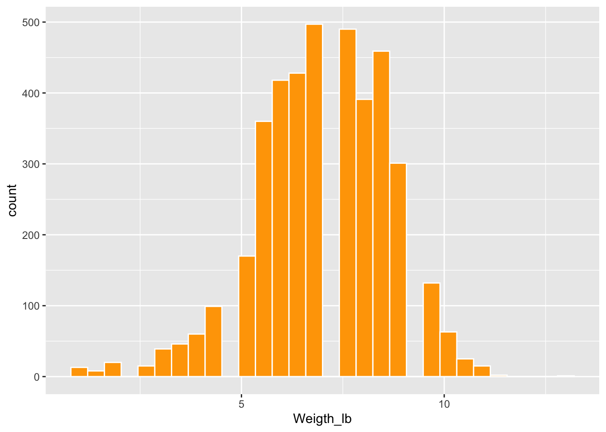
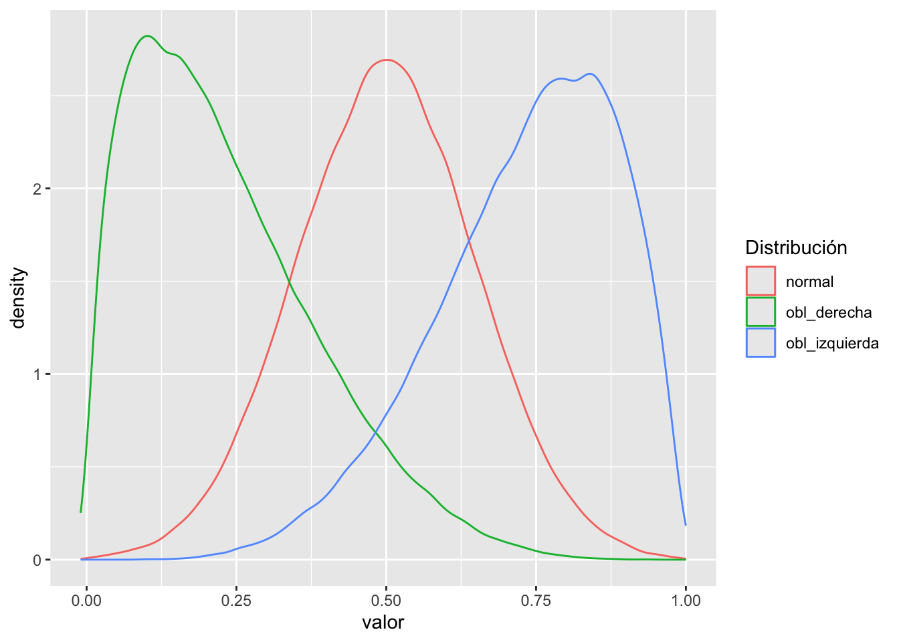
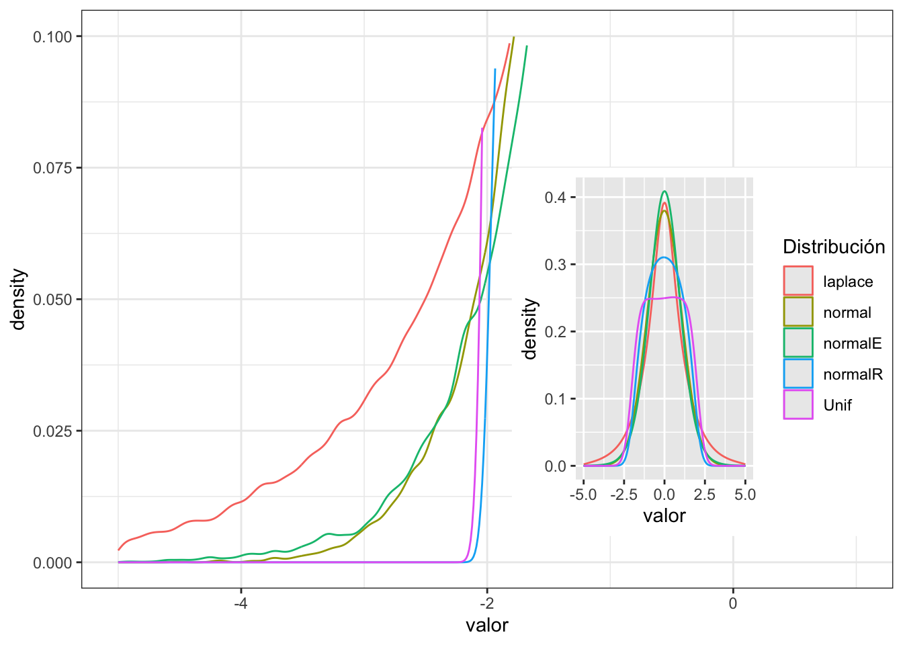

Capítulo 8 Estadística Descriptiva
Fecha de la última revisión
## [1] "2026-08-13"

Activar los Paquetes
library(ggplot2) # paquete para visualizar los datos
library(ggversa) # paquete para diferentes conjuntos de datos
library(modeest) # paquete para calcular la moda
library(pastecs) # paquete para análisis tiempo-espacial usado en ecología
library(psych) # paquete para análisis psicométrica, psicológica y de personalidad
library(knitr) # un grupo de función para incluyendo tablas bonitas con kable.
library(tidyverse)
library(gridExtra)
library(e1071)8.1 Estadística descriptiva
En los módulos de “Medidas de tendencia central” y “Medidas de dispersión” se explicó de dónde provienen estos parámetros y cómo calcularlos. En este módulo aprenderemos distintas funciones para calcularlos individualmente, y herramientas para obtenerlos todos (y otros) a la vez.
Los índices que veremos aquí incluyen
- el promedio
- la mediana
- la desviación estándar
- el mínimo
- el máximo
- los cuantiles
- el índice de oblicuidad (en inglés “Skewness”)
- el índice de curtosis (en inglés “Kurtosis”)
Aquí creamos un conjunto de 100 datos con un promedio de 100 y una desviación estándar de 10. Nota que la función set.seed() hace que la simulación comience igual cada vez que se corre, dando el mismo resultado. Esto se usa solo cuando uno está enseñando, para que los resultados sean consistentes.
# rnorm(n=100, mean=100, sd=10) # genera un número al azar de una distribución normal
set.seed(12345) # para que los resultados sean consistentes
x=rnorm(100, 100, 10) #(100 datos, x=100, sd=10)
#x
df=data.frame(x)
#df
mean(df$x) # el promedio## [1] 102.452
sd(df$x) # la desviación estándar## [1] 11.14731
min(df$x) # el valor mínimo## [1] 76.19642
max(df$x) # el valor máximo## [1] 124.7711- Quiz 1: Usa R y construye una lista o data frame con los siguientes datos y calcular el promedio. Contesta en MSTeam Form con tu respuesta. 4, 6, 7, 3, 9, 10, 19, 52.
8.2 Análisis con muchos datos
Usaremos datos que hemos visto en el módulo Producción de Gráficos.
Se necesita el archivo DownloadFestival que se encuentra debajo la pestaña de Los Datos. El ejemplo proviene de Field et al. (2014).
Una bióloga estaba preocupado por los posibles efectos sobre la salud de los que particpan a un festivales de música. Entonces, un año fue al Download Festival en el Reino Unido (Download Festival UK). Ella midió la higiene del los que participaron al concierto n= 810 durante el festival de 3 días. Cada día intentaba encontrar a todas las personas que censó el primer día. Los valores asignado fueron de 0 a 4 sobre el nivel de limpieza por como olia los participantes
- 0 = hueles como un cadáver.
- 4 = hueles a rosas dulces en un fresco día de primavera
library(readr)
Karn_Penrose_infant_survivorship <- read_csv("Data_files_csv/Karn_Penrose_infant_survivorship.csv")
KP=Karn_Penrose_infant_survivorship #usamos un nombre más corta para facilitar
head(KP)## # A tibble: 6 × 4
## row_num Survival Weigth_lb Gestation_Time_days
## <dbl> <dbl> <dbl> <dbl>
## 1 1 0 1 155
## 2 2 0 1 165
## 3 3 0 1 165
## 4 4 0 5.5 170
## 5 5 0 1 180
## 6 6 0 1.5 180
summary(KP)## row_num Survival Weigth_lb Gestation_Time_days
## Min. : 1 Min. :0.000 Min. : 1.000 Min. :155.0
## 1st Qu.:1014 1st Qu.:1.000 1st Qu.: 6.000 1st Qu.:265.0
## Median :2026 Median :1.000 Median : 7.000 Median :280.0
## Mean :2026 Mean :0.923 Mean : 7.015 Mean :276.2
## 3rd Qu.:3039 3rd Qu.:1.000 3rd Qu.: 8.000 3rd Qu.:295.0
## Max. :4052 Max. :1.000 Max. :13.000 Max. :345.0
library(ggplot2)
ggplot(KP, aes(Weigth_lb))+
geom_histogram(color="white", fill="orange")
Una bióloga estaba preocupado por los posibles efectos sobre la salud de los que particpan a un festivales de música. Entonces, un año fue al un Festival en el Reino Unido (Download Festival UK). Ella midió la higiene del los que participaron al concierto n= 810 durante el festival de 3 días. Cada día intentaba encontrar a todas las personas que censó el primer día. Los valores asignado fueron de 0 a 4 sobre el nivel de limpieza por como olia los participantes
- 0 = hueles como un cadáver.
- 4 = hueles a rosas dulces en un fresco día de primavera
library(readr)
DownloadFestival_No_Outlier <- read_csv("DownloadFestival_No_Outlier.csv")
dlf=DownloadFestival_No_Outlier #usamos un nombre más corta para facilitar
head(dlf) # ver las 6 primeras filas## # A tibble: 6 × 5
## ticknumb gender day1 day2 day3
## <dbl> <chr> <dbl> <dbl> <dbl>
## 1 2111 Male 2.64 1.35 1.61
## 2 2229 Female 0.97 1.41 0.29
## 3 2338 Male 0.84 NA NA
## 4 2384 Female 3.03 NA NA
## 5 2401 Female 0.88 0.08 NA
## 6 2405 Male 0.85 NA NA
dlf## # A tibble: 810 × 5
## ticknumb gender day1 day2 day3
## <dbl> <chr> <dbl> <dbl> <dbl>
## 1 2111 Male 2.64 1.35 1.61
## 2 2229 Female 0.97 1.41 0.29
## 3 2338 Male 0.84 NA NA
## 4 2384 Female 3.03 NA NA
## 5 2401 Female 0.88 0.08 NA
## 6 2405 Male 0.85 NA NA
## 7 2467 Female 1.56 NA NA
## 8 2478 Female 3.02 NA NA
## 9 2490 Male 2.29 NA NA
## 10 2504 Female 1.11 0.44 0.55
## # ℹ 800 more rows8.3 Remover los NA del análisis
En los datos del festival, en algunos días hay participantes sin datos, así que se añadió un NA. En esos casos, para que el análisis funcione, hay que añadir el argumento na.rm=TRUE, que significa remover los NA. Para darte cuenta, quita na.rm=TRUE cuando uses “day2” o “day3” y evalúa qué pasa.
## [1] 0.9609091
sd(dlf$day1, na.rm=TRUE)## [1] 0.6935389
min(dlf$day1, na.rm=TRUE)## [1] 0.02
max(dlf$day1, na.rm=TRUE)## [1] 3.69
median(dlf$day1, na.rm=TRUE)## [1] 1.798.4 Resumen estadístico de una variable
Para ver los estadísticos mencionados arriba (menos la moda, la oblicuidad y la curtosis) se puede usar la función stat.desc() del paquete pastecs. Para facilitar la lectura se usa la función round(x, 3); el 3 indica la cantidad de decimales que se muestran. Si no usamos round(), los valores aparecen en notación científica.
stat.desc(x) (paquete pastecs) — resumen estadístico completo.
- Qué hace: para una o varias columnas numéricas, devuelve de una vez el n, la media, la mediana, la varianza, la desviación estándar, el error estándar, el intervalo de confianza y más.
-
Consejo: envuélvela en
round(stat.desc(...), 3)para evitar la notación científica.
Nota que hay muchos más parámetros calculados. Aparece en la lista en orden el valor mínimo: min(), el valor máximo: max(), la mediana: median, el promedio: mean, la desviación estándar; std.dev entre otros.
## day1
## nbr.val 8.100000e+02
## nbr.null 0.000000e+00
## nbr.na 0.000000e+00
## min 2.000000e-02
## max 3.690000e+00
## range 3.670000e+00
## sum 1.434620e+03
## median 1.790000e+00
## mean 1.771136e+00
## SE.mean 2.436847e-02
## CI.mean.0.95 4.783289e-02
## var 4.809962e-01
## std.dev 6.935389e-01
## coef.var 3.915786e-01## day1
## nbr.val 810.00
## nbr.null 0.00
## nbr.na 0.00
## min 0.02
## max 3.69
## range 3.67
## sum 1434.62
## median 1.79
## mean 1.77
## SE.mean 0.02
## CI.mean.0.95 0.05
## var 0.48
## std.dev 0.69
## coef.var 0.398.5 Resumen Estadístico de multiples variables
Si uno quiere evaluar múltiples variables continuas a la vez, se puede usar la misma función; dentro de c() se añaden todas las variables de interés.
mean(dlf$day1, na.rm=TRUE)## [1] 1.771136## day1 day2 day3
## nbr.val 810.000 264.000 123.000
## nbr.null 0.000 1.000 0.000
## nbr.na 0.000 546.000 687.000
## min 0.020 0.000 0.020
## max 3.690 3.440 3.410
## range 3.670 3.440 3.390
## sum 1434.620 253.680 120.110
## median 1.790 0.790 0.760
## mean 1.771 0.961 0.977
## SE.mean 0.024 0.044 0.064
## CI.mean.0.95 0.048 0.087 0.127
## var 0.481 0.520 0.504
## std.dev 0.694 0.721 0.710
## coef.var 0.392 0.750 0.727- Quiz 3: Usa R usa el data.frame Camas_Hospital en el paquete ggversa. Contesta en MSTeam Form con tu respuesta. Selecciona la variable Camas, que representa el número de camas por cada 1000 personas en muchos países. ¿Cuál es el rango (range)?
8.6 Los Cuantiles
Los cuantiles son los valores en intervalos específicos de una variable aleatoria continua. A menudo dan una mejor interpretación de la distribución cuando los valores no siguen una distribución normal. Típicamente, la distribución se divide en 4 partes (los cuantiles 0.25, 0.50 = la mediana, 0.75), que se conocen como cuartiles. Para más detalle pueden ver el siguiente enlace https://en.wikipedia.org/wiki/Quantile.
En el siguiente ejemplo se muestra cómo utilizar la función quantile y seleccionar los cuantiles deseados con el componente probs = c(…).
## 5% 10% 25% 50% 75% 95% 99%
## 0.5945 0.8490 1.3125 1.7900 2.2300 2.9055 3.3173Se puede usar también la función describe del paquete psych, que da automáticamente estos cuantiles.
describe(dlf$day1)## vars n mean sd median trimmed mad min max range skew kurtosis se
## X1 1 810 1.77 0.69 1.79 1.77 0.7 0.02 3.69 3.67 0 -0.42 0.028.7 El índice de oblicuidad (Skewness)
Los términos oblicuidad (skewness) y curtosis (kurtosis), junto con el “método de los momentos” para describir la forma de una distribución, fueron introducidos por Karl Pearson a finales del siglo XIX. Pearson fue uno de los fundadores de la estadística moderna.
La oblicuidad (skewness) mide la asimetría de una distribución. Es positiva cuando la cola larga está a la derecha, negativa cuando está a la izquierda, y ≈ 0 cuando la distribución es simétrica.
El índice de oblicuidad describe la (a)simetría de una distribución alrededor de su promedio. Otra forma de describirlo es como el tercer momento, porque las diferencias respecto al promedio se elevan a la potencia 3.
La fórmula es la siguiente. Es muy similar a la de la varianza, pero note que las diferencias se elevan a la potencia 3. Para más información vea este enlace https://en.wikipedia.org/wiki/Skewness.
\[\text{Oblicuidad} = \frac{1}{N}\sum_{i=1}^N\left(\frac{x_i-\overline{x}}{\sigma}\right)^3\]
Primero voy a crear tres conjuntos de datos
- con distribución normal
- sesgada a la derecha (oblicuidad positiva)
- sesgada a la izquierda (oblicuidad negativa)
normal=rnorm(100000, .5, .15)
obl_derecha=rbeta(100000, 1.5,5)
obl_izquierda=rbeta(100000, 5.5,2)
normal=as_tibble(normal)
obl_derecha=as_tibble(obl_derecha)
obl_izquierda=as_tibble(obl_izquierda)Ahora unimos los data frames y se añade nombres a las columnas
## value value value
## 1 0.5335888 0.3059217 0.7786439
## 2 0.3265665 0.3628246 0.8677283## normal obl_derecha obl_izquierda
## 1 0.5335888 0.3059217 0.7786439
## 2 0.3265665 0.3628246 0.8677283El próximo paso es apilar cada columna una sobre la otra. La razón que queremos esto es que deseamos reproducir las variables en un mismo gráfico
library(tidyverse)
df2=df%>%
gather(key = "Distribución", value="valor", c(normal, obl_derecha, obl_izquierda))
head(df2, n=3)## Distribución valor
## 1 normal 0.5335888
## 2 normal 0.3265665
## 3 normal 0.5633628
# unique(df2$Distribución) # función para ver el nombre de las variables en la columna DistribuciónAhora vamos a ver los datos un gráfico. Vemos que la distribución de los datos son muy diferentes, tanto la distribución en azul y verde están sesgado a unos valores y tienen una cola o valores más grande (azul) o pequeños (verde) que si fuese una distribución normal.
ggplot(df2, (aes(valor, colour=Distribución)))+
geom_density()+
xlim(-.01,1)
ggsave("Graficos/Skewness.png")Ahora se calcula el índice de oblicuidad y comparamos los valores. Como regla, cuando el nivel de oblicuidad está entre
- -0.5 y 0.5 se considera dentro de una distribución simétrica (normal).
- -1.0 y -0.5, o entre 0.5 y 1.0, los valores tienen una oblicuidad moderada.
- Menor de -1.0 o mayor de 1.0 los datos tienen una oblicuidad grande.
Ahora evaluamos la oblicuidad de las tres distribuciones usando la función skewness del paquete e1071.
skewness(x) (paquete e1071) — índice de oblicuidad (asimetría).
-
Qué hace: cuantifica la asimetría de la variable
x. - Cómo leer: ≈ 0 → simétrica; positiva → cola larga a la derecha; negativa → cola larga a la izquierda.
Para una distribución normal (simétrica) el valor es muy cercano a cero. Los datos sesgados a la derecha (con cola hacia la derecha) tienen oblicuidad positiva, y los sesgados a la izquierda, oblicuidad negativa.
library(e1071)
e1071::skewness(normal$value) # la oblicuidad de los datos de una distribución normal## [1] -0.005892201
e1071::skewness(obl_derecha$value) # sesgada a la derecha -> oblicuidad positiva## [1] 0.8227041
e1071::skewness(obl_izquierda$value) # sesgada a la izquierda -> oblicuidad negativa## [1] -0.65051058.8 El índice de curtosis (Kurtosis)
La curtosis (kurtosis) mide el peso de las colas de una distribución. En exceso, es positiva cuando las colas son pesadas (más valores atípicos que la normal) y negativa cuando son ligeras. La normal tiene curtosis en exceso ≈ 0.
El índice de curtosis describe las colas de una distribución. Otra forma de describirlo es como el cuarto momento, porque las diferencias respecto al promedio se elevan a la potencia 4. La curtosis mide la propensión a tener datos atípicos (colas pesadas).
La fórmula es la siguiente. Es muy similar a la de la varianza, pero note que las diferencias se elevan a la potencia 4. Para más información vea este enlace https://www.wikiwand.com/en/Kurtosis.
\[\text{Curtosis} = \frac{1}{N}\sum_{i=1}^N\left(\frac{x_i-\overline{x}}{\sigma}\right)^4\]
Primero voy a crear cuatro conjuntos de datos
- con distribución normal
- con distribución normal, con cola reducida
- con distribución normal, con cola extendida
- distribución uniforme
library(PearsonDS)
library(rmutil)
momentsR=c(mean=0, variance=1, skewness=0, kurtosis=2)
momentsE=c(mean=0, variance=1, skewness=0, kurtosis=4)
normalR=rpearson(100000, moments=momentsR)
normalE=rpearson(100000, moments=momentsE)
Unif=runif(100000, -2,2)
normal=rnorm(100000, 0,1)
laplace=rlaplace(500000, m=0, s=1)
normal=as_tibble(normal)
normalR=as_tibble(normalR)
normalE=as_tibble(normalE)
Unif=as_tibble(Unif)
laplace=as_tibble(laplace)Ahora unimos los data frames y se añade nombres a las columnas
## value value value value value
## 1 0.8091208 -0.6878067 0.6889523 -1.903080764 0.005239841
## 2 -0.6279420 1.0716031 -0.9723335 -0.001047375 -0.167021133## normal normalR normalE Unif laplace
## 1 0.8091208 -0.6878067 0.6889523 -1.903080764 0.005239841
## 2 -0.6279420 1.0716031 -0.9723335 -0.001047375 -0.167021133El próximo paso es apilar cada columna una sobre la otra. La razón que queremos esto es que deseamos reproducir las variables en un mismo gráfico
library(tidyverse)
df2=df%>%
gather(key = "Distribución", value="valor", c(normal, normalR, normalE, Unif, laplace))
head(df2, n=3)## Distribución valor
## 1 normal 0.8091208
## 2 normal -0.6279420
## 3 normal -1.2182487
# unique(df2$Distribución) #función para ver el nombre de las variables en la columna DistribuciónAhora vamos a ver los datos en un gráfico. Vemos que la distribución de los datos son muy diferentes, Hay que concentrarse no en el pico de la distribución, sino en las colas de los datos. Fíjate en la distribución normal (color amarillo) y compara si las colas de las demás están por debajo o por encima de ella.
Tanto la distribución uniforme (color rosa) como la normal reducida (normalR, color azul) pasan por debajo de la curva normal. Al contrario, las líneas verde y roja pasan por encima, por lo que sus colas son más predominantes.
whole=ggplot(df2, (aes(valor, colour=Distribución)))+
geom_density(adjust=5)+
xlim(-5,5)
ggsave("Graficos/curtosis_whole.png")
sub=ggplot(df2, (aes(valor, colour=Distribución)))+
geom_density()+
theme_bw() +
scale_x_continuous(limits=c(-5, 1)) +
scale_y_continuous(limits=c(0, .1)) +
theme(legend.position= "none")
ggsave("Graficos/curtosis.png")
sub + annotation_custom(
ggplotGrob(whole),
xmin = -1.8, xmax = 1.4, ymin = 0.005, ymax = 0.075)
Ahora se calcula el índice de curtosis (en exceso) y comparamos los valores. Cuando se acerca a cero no hay exceso de curtosis, que es lo que uno espera de una distribución normal:
- Menor de -1.0 los datos están muy aplanados (Uniforme, normalR).
- Mayor de 1.0 (la distribución de Laplace).
Ahora evaluamos la curtosis de las distribuciones usando la función kurtosis del paquete e1071.
kurtosis(x) (paquete e1071) — índice de curtosis (peso de las colas).
-
Qué hace: mide qué tan pesadas son las colas de la variable
x(curtosis en exceso). - Cómo leer: ≈ 0 → como la normal; positiva → colas pesadas (más atípicos); negativa → colas ligeras.
Para una distribución normal el valor es muy cercano a cero. Cuando hay exceso de colas (colas pesadas, como en Laplace) la curtosis es positiva; cuando las colas son ligeras (como en la uniforme) la curtosis es negativa.
## [1] 0.03718564
e1071::kurtosis(normalR$value) # curtosis de los datos restringido## [1] -1.008687
e1071::kurtosis(normalE$value) # curtosis de los datos con más colas## [1] 1.005719
e1071::kurtosis(Unif$value) # curtosis de una distribución uniforme, colas ligeras## [1] -1.200839
e1071::kurtosis(laplace$value) # curtosis de distribución Laplace, exceso de colas## [1] 3.011958Quiz 1
Quiz 2
Quiz 3